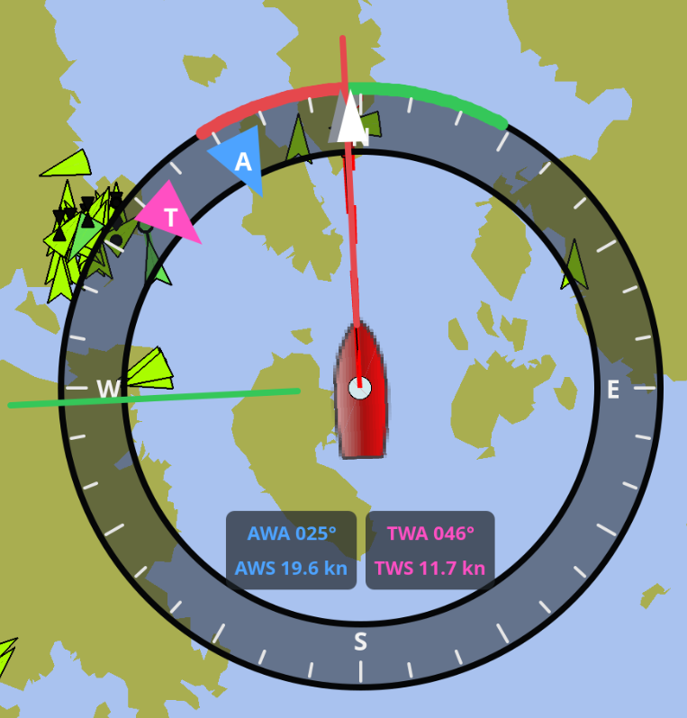

Composite wind instrument

The composite wind instrument combines apparent and true wind angles and speeds with vessel heading and course over ground. Its annular face leaves the center mostly transparent so chart content remains visible.
The instrument accepts eleven independently selectable Signal K paths:
-
environment.wind.angleApparent -
environment.wind.speedApparent -
environment.wind.angleTrueWater -
environment.wind.speedTrue -
navigation.headingMagnetic -
navigation.courseOverGroundTrue -
performance.beatAngle(optional, for the laylines) -
performance.gybeAngle(optional, for the laylines) -
navigation.speedThroughWater(optional, for over-ground laylines) -
environment.current.setTrue(optional, for over-ground laylines) -
environment.current.drift(optional, for over-ground laylines)
The speed-through-water and current paths default to the standard Signal K keys shown above; the others are unset until you map them.
Signal K angles are converted from radians to degrees. Speeds are converted from metres per second to knots. Missing or timed-out values are replaced by dashes without hiding the remaining current data.
The heading input is treated as magnetic and corrected with OpenCPN’s current magnetic variation before it is drawn against the true-north chart.
For the values OpenCPN already fuses for own ship — course over ground and
heading — the instrument falls back to OpenCPN’s data whenever the matching
Signal K key is left unset or its data has timed out. A configured, fresh
Signal K key always takes precedence, so you keep full source control (for
example through the SRC: source-lock modes) when you want it, while the
instrument still works out of the box without mapping those two paths.
To keep the four readouts legible over busy chart content, each apparent/true column is drawn on a translucent backing panel tinted with the ring color. The thickness of the dial ring itself can be made translucent too via the Ring opacity setting (0 = invisible, 255 = solid) so more of the chart shows through.
In North up mode the compass remains fixed while heading, COG, wind markers,
and the port/starboard sectors rotate. In Heading up mode the bow and colored
sectors remain at the top while the compass and COG rotate relative to heading.
The A and T triangles point inward because wind comes from the indicated
direction; heading and COG triangles point outward.
When Show laylines is enabled, two laylines are drawn from the true wind
direction in the port and starboard colors. They mark the courses the vessel
would make on each tack and the instrument switches automatically between the
upwind and downwind set based on the current true wind angle: the close-hauled
Beat angle is used when sailing within 90° of the wind, the running Gybe
angle when sailing further off. Each angle defaults to a configurable fixed
value but is overridden by its Signal K key (performance.beatAngle /
performance.gybeAngle, in radians) whenever that data is available. The
laylines are drawn over the dial ring but below the wind, heading and COG
direction triangles so the markers stay readable.
The Layline reference setting selects what the laylines represent:
-
Through water (HDG/STW) — the course steered through the water on each tack, i.e. the true wind direction offset by the tacking angle. The two laylines are symmetric about the wind. This is the default.
-
Over ground (COG/SOG) — the track made good over ground. The through-water course is combined with the tidal current (from
environment.current.setTrue/drift) and the boat’snavigation.speedThroughWaterinto a ground track, so the two laylines bend asymmetrically with the current — matching how they fetch a fixed mark. When the current or speed-through-water data is missing, this mode falls back to the through-water course.
The laylines extend a little beyond the dial rim. This overhang is purely visual: the instrument is still positioned and sized by its dial, so the dial center stays on the vessel and neighbouring instruments are laid out as if the laylines were not there. The overhang is likewise ignored by the right-click configuration menu.
The diameter, ring opacity, layline reference, and colors of the face, ticks, text, markers, border, and port/starboard sectors are configurable. The central opening, tick spacing, font sizes, marker geometry, and the label backing panels are fixed.